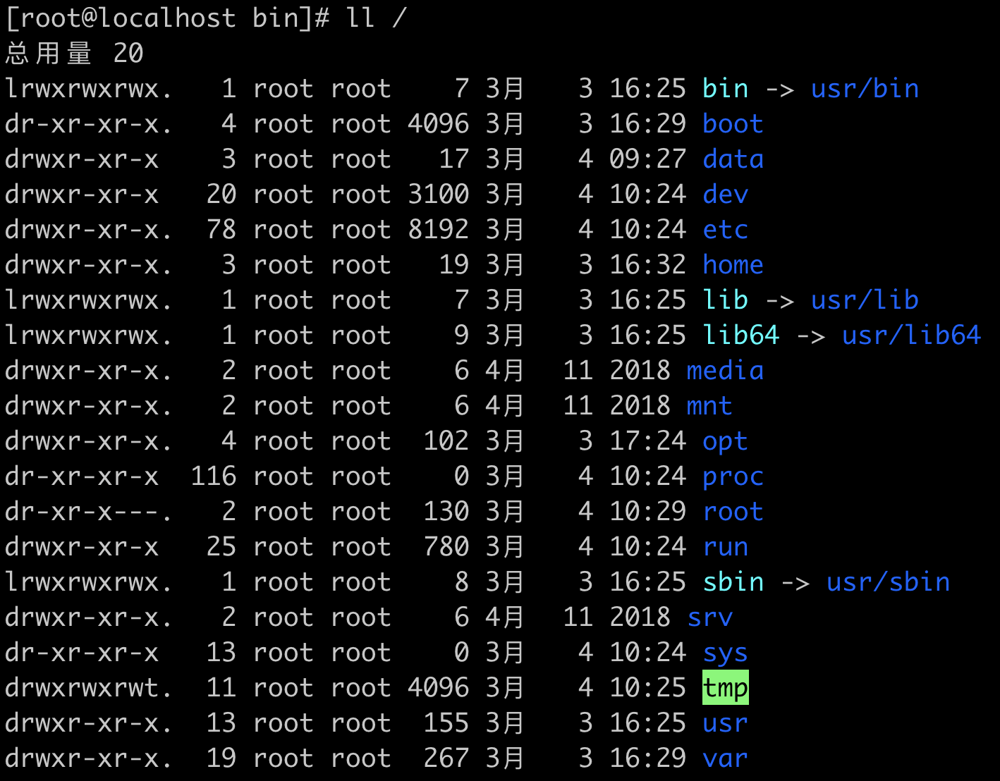
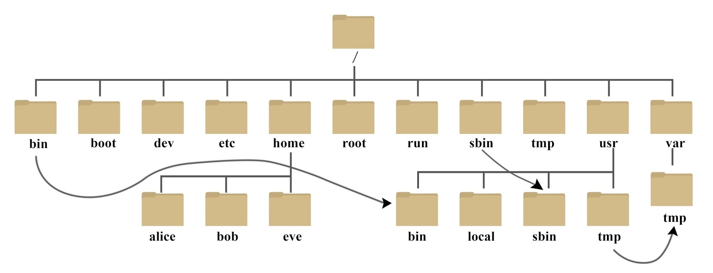

《Linux实战技能100讲》study notes
发布于：2021-03-04 10:12:16
标签：/
linux
/
访问：
学习备注
打包和压缩的命令还需要再熟悉一下
vim 这块 ，老师讲到的内容需要自己复习 试着做一遍，
学习内容综述
- linux背景介绍
- 系统操作
- 服务管理
- shell 脚本
- 文本操作
- 常用服务搭建
linux命令行常用光标移动快捷键
1
2
| ctrl+a : 跳到本行的行首
ctrl+e : 跳到行尾s
|
Linux 系统目录结构


常见目录介绍
万能的帮助命令
man
1
2
3
4
5
6
7
| # man 是 manual（手册） 的缩写
man [命令名称]
# 查看某个章节的帮助
man [number] [命令名称]
man -a [命令名称]
|
help
1
2
3
4
5
6
7
8
9
| # 内部命令使用help帮助
help cd
# 外部命令使用help
ls --help
# 查看命令类别
type cd
type ls
|
info
文件管理
1
2
3
4
5
6
7
8
9
10
11
12
13
14
| pwd
# 更改当前操作目录 path 可以使用相对路径或绝对路径
cd [path]
cd ..
cd -
ls [option] [file or dir] [file or dir]
-l 长格式显示文件
-a 显示隐藏文件
-r 逆序显示 (默认名字逆向)
-t 按照时间顺序显示
-R 递归显示
|
1
2
3
4
5
6
7
8
9
10
11
12
13
| mkdir [dir1] [dir2]
# -p 建立多级目录
mkdir -p /a/b/c/d
# 只能删除空的目录
rmdir [dir]
# -r 删除非空目录
rm -r [dir]
# -f 无需确认（提示）就删除
rm -rf [dir]
|
1
2
3
4
5
6
7
8
| # 复制目录 需要 -r
# -v 显示复制过程 -p 保留原有时间 -a 保留权限，保留属主，保留修改时间等文件属性
cp -r [源文件] [目标目录]
touch
# 重命名 / 移动 (可以使用通配符)
mv
|
1
2
3
4
5
6
7
8
9
10
11
12
13
14
| # 文本内容显示到终端
cat
# 查看文件开头，可以指定查看几行
head -[number]
# 查看文件结尾 ，常用参数 -f 文件内容更新后，显示内容同步更新
tail -f -[number]
more
less
wc 统计文件内容信息
|
打包和压缩
- 最早的linux备份介质是磁带，使用的命令是
tar
- 可以打包后的磁带文件进行压缩存储，压缩的命令是
gzip和bzip2
- 经常使用的扩展名是
.tar.gz .tar.bz2 .tgz
1
2
3
4
5
6
7
8
9
10
11
| # linux 下分成两步 打包 和 压缩
tar
c 打包
x 解包
f 指定操作类型为文件
# 打包并压缩
tar cfz /opt/php.tar.gz /opt/php
# 解包
tar xf /opt/php.tar /opt
|
vi / vim
四种模式
1
2
3
4
5
6
7
8
9
10
11
12
13
14
15
16
17
18
19
20
21
22
23
24
25
26
27
28
29
30
31
32
33
34
35
36
37
38
39
| yy #复制光标所在的当前行
p # 粘贴
# 复制3行
3 yy
y$ 复制光标到当前行尾的内容
# 剪切
dd
d$
# 撤销
u
# 对撤销的内容重做
ctrl + r
单个字符的删除
x
显示行号
:set
移动光标到指定行 如 7 + G
g 移动到第一行
G 移动到最后一行
^ 进入光标所在行行首
$ 进入光标所在行行尾
:w file_save_path 保存文件
:! 执行临时的linux命令
查找
/待查找的字符 移动下一个单词 n 上一个 N
:%s/old/new/g 全局替换
:3,5s/old/new 3-5行内进行替换，没有g就单次替换
:s/old/new 当前行替换
:set nu
:set nonu
vim /etc/vimrc 修改vim的配置文件
|
用户和用户组管理
1
2
3
4
5
6
7
8
9
10
11
12
13
14
15
16
17
18
19
20
21
22
23
24
25
26
27
28
| useradd wilson
id wilson
tail -10 /etc/passwd
passwd wilson
userdel wilson
userdel -r wilson
usermod wilson
#
chage
groupadd
groupdel
usermod -g [group_name] [user_name]
useradd -g [group_name] [user_name]
# 临时切换用户
su - [user_name]
sudo
# su 和 sudo 这块还需要了解
|
网络管理
软件包的管理和使用